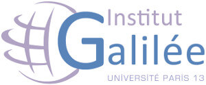

2018/2019  Master 2 3IR
Le Master mention « ingénierie et innovation en images et réseaux » (M3IR) a pour objectif d’offrir une formation en traitement d’images et réseaux informatiques, à finalité professionnelle ou recherche, selon deux parcours (images, réseaux). La deuxième année (M2) propose des enseignements de préparation à l’insertion professionnelle. Elle conserve un tronc commun important et propose une spécialisation via ses deux parcours : le parcours » images » s’oriente vers le domaine du traitement et transport des contenus audio-visuels ; le parcours « réseaux » s’oriente vers les technologies réseaux et le développement d’applications Internet. L’objectif est de fournir aux étudiants les bases théoriques et la maîtrise pratique des technologies liées au multimédia et aux réseaux informatiques, afin de former de futurs professionnels destinés au marché du secteur industriel du transport et du traitement de l’information audio-visuelle et du multimédia. Ce master prépare aussi à une thèse de doctorat dans la perspective d’une carrière de chercheurs ou d’enseignants-chercheurs.2017/2018 Master 1 3IR
La première année de ce master (M1), commune aux deux parcours, vise à donner aux étudiants les bases scientifiques d’une compétence en traitement du signal et de l’image, en réseaux informatiques, en technologie Java, ainsi qu’en télécommunications numériques.